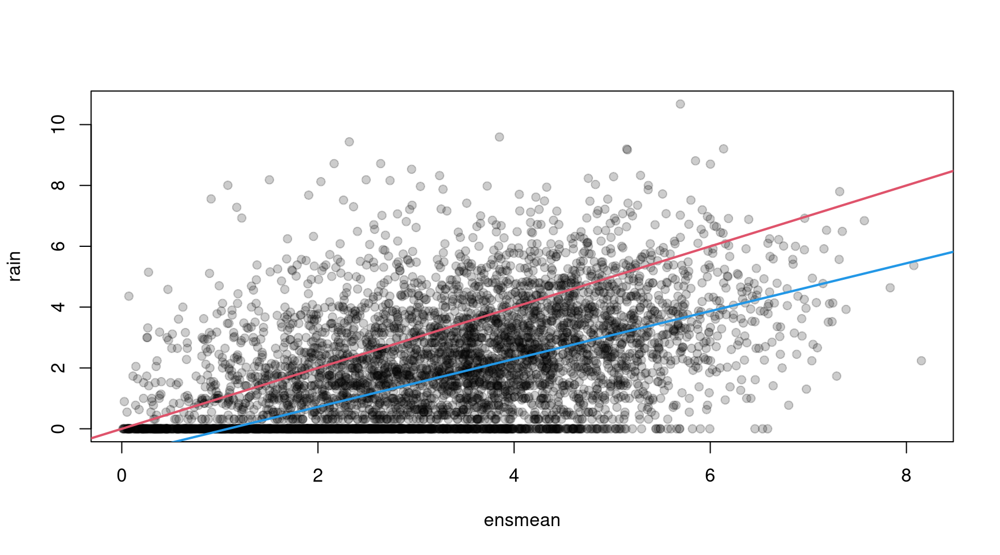
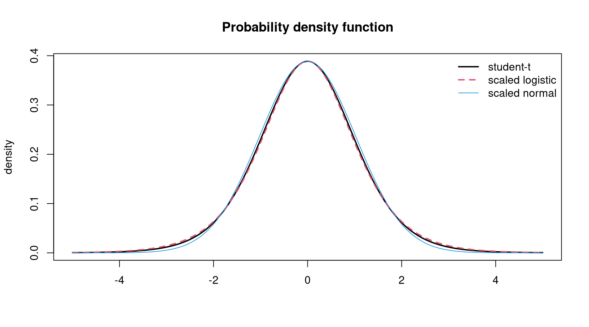

crch(formula, data, subset, na.action, weights, offset, link.scale = "log",
dist = "gaussian", df = NULL, left = -Inf, right = Inf, truncated = FALSE,
type = "ml", control = crch.control(...),
model = TRUE, x = FALSE, y = FALSE, ...)Heteroscedastic Censored and Truncated Regression with crch
Abstract
This introduction to the R package crch is a (slightly) modified version of Messner, Mayr, and Zeileis (2016), published in The R Journal.
The crch package provides functions for maximum likelihood estimation of censored or truncated regression models with conditional heteroscedasticity along with suitable standard methods to summarize the fitted models and compute predictions, residuals, etc. The supported distributions include left- or right-censored or truncated Gaussian, logistic, or student-t distributions with potentially different sets of regressors for modeling the conditional location and scale. The models and their R implementation are introduced and illustrated by numerical weather prediction tasks using precipitation data for Innsbruck (Austria).
1 Introduction
Censored or truncated response variables occur in a variety of applications. Censored data arise if exact values are only reported in a restricted range. Data may fall outside this range but are reported at the range limits. In contrast, if data outside this range are omitted completely we call it truncated. E.g., consider wind measurements with an instrument that needs a certain minimum wind speed to start working. If wind speeds below this minimum are recorded as \(\le\)minimum the data is censored. If only wind speeds exceeding this limit are reported and those below are omitted the data is truncated. Even if the generating process is not as clear, censoring or truncation can be useful to consider limited data such as precipitation observations.
The tobit (Tobin 1958) and truncated regression (Cragg 1971) models are common linear regression models for censored and truncated conditionally normally distributed responses respectively.
Beside truncated data, truncated regression is also used in two-part models (Cragg 1971) for censored type data: A binary (e.g., probit) regression model fits the exceedance probability of the lower limit and a truncated regression model fits the value given the lower limit is exceeded.
Usually linear models like the tobit or truncated regression models assume homoscedasticity which means that the variance of an underlying normal distribution does not depend on covariates. However, sometimes this assumption does not hold and models that can consider conditional heteroscedasticity should be used. Such models have been proposed, e.g., for generalized linear models (Nelder and Pregibon 1987, smyth1989), generalized additive models (Rigby and Stasinopoulos 1996, rigby2005), or beta regression (Cribari-Neto and Zeileis 2010). There also exist several R packages with functions implementing the above models, e.g., dglm (Dunn, Smyth, and Corty 2023), glmx (Zeileis, Koenker, and Doebler 2023), gamlss (Rigby and Stasinopoulos 2005), betareg (Grün, Kosmidis, and Zeileis 2012) amongst others.
The crch package provides functions to fit censored and truncated regression models that consider conditional heteroscedasticity. It has a convenient interface to estimate these models with maximum likelihood and provides several methods for analysis and prediction. In addition to the typical conditional Gaussian distribution assumptions it also allows for logistic and student-t distributions with heavier tails.
The outline of the paper is as follows. Section 2 describes the censored and truncated regression models, and Section 3 presents their R implementation. Section 4 illustrates the package functions with numerical weather prediction data of precipitation in Innsbruck (Austria) and finally Section 5 summarizes the paper.
2 Regression models
For both, censored and truncated regression, a normalized latent response \((y^*-\mu)/\sigma\) is assumed to follow a certain distribution \(D\)
\[ \frac{y^*-\mu}{\sigma} \sim D \]
The location parameter \(\mu\) and a link function of the scale parameter \(g(\sigma)\) are assumed to relate linearly to covariates \(\mathbf{x} = (1, x_1, x_2, \ldots)^\top\) and \(\mathbf{z} = (1, z_1, z_2, \ldots)^\top\):
\[ \begin{eqnarray} \mu &= &\mathbf{x}^{\top}\beta \\ g(\sigma) & = & \mathbf{z}^{\top}\gamma \end{eqnarray} \tag{1}\]
where \(\beta=(\beta_0, \beta_1, \beta_2, \ldots)^\top\) and \(\gamma=(\gamma_0, \gamma_1, \gamma_2, \ldots)^\top\) are coefficient vectors. The link function \(g(\cdot):\mathbb{R}^+ \mapsto \mathbb{R}\) is a strictly increasing and twice differentiable function; e.g., the logarithm (i.e., ) is a well suited function. Although they only map to \(\mathbb{R}^+\), the identity \(g(\sigma) = \sigma\) or the quadratic function \(g(\sigma)=\sigma^2\) can be usefull as well. However, problems in the numerical optimization can occur.
Commonly \(D\) is the standard normal distribution so that \(y^*\) is assumed to be normally distributed with mean \(\mu\) and variance \(\sigma^2\). \(D\) might also be assumed to be a standard logistic or a student-t distribution if heavier tails are required. The tail weight of the student-t distribution can be controlled by the degrees of freedom \(\nu\) which can either be set to a certain value or estimated as an additional parameter. To assure positive values, \(\log(\nu)\) is modeled in the latter case.
\[ \log(\nu) = \delta \tag{2}\]
2.1 Censored regression (tobit)
The exact values of censored responses are only known in an interval defined by \(\text{left}\) and \(\text{right}\). Observation outside this interval are mapped to the interval limits
\[ y = \begin{cases} \text{left} & y^* \le \text{left} \\ y^* & \text{left} < y^* < \text{right}\\ \text{right} & y^* \ge \text{right} \end{cases} \]
The coefficients \(\beta\), \(\gamma\), and \(\delta\) (Equation 1 and Equation 2)) can be estimated by maximizing the sum over the data set of the log-likelihood function \(\log(f_{\text{cens}}(y, \mu, \sigma))\), where
\[ f_{\text{cens}}(y, \mu, \sigma) = \begin{cases} F\left(\frac{\text{left} - \mu}{\sigma}\right) & y \le \text{left} \\ f\left(\frac{y - \mu}{\sigma}\right) & \text{left} < y < \text{right} \\ \left(1 - F\left(\frac{\text{right} - \mu}{\sigma}\right)\right) & y \ge \text{right} \end{cases} \]
\(F()\) and \(f()\) are the cumulative distribution function and the probability density function of \(D\), respectively. If \(D\) is the normal distribution this model is a heteroscedastic variant of the tobit model (Tobin 1958).
2.2 Truncated regression
Truncated responses occur when latent responses below or above some thresholds are omitted.
\[ y = y^*|\text{left} < y^* < \text{right} \]
Then \(y\) follows a truncated distribution with probability density function
\[ f_{\text{tr}}(y, \mu, \sigma) = \frac{f\left(\frac{y - \mu}{\sigma}\right)} {F\left(\frac{\text{right} - \mu}{\sigma}\right) - F\left(\frac{\text{left} - \mu}{\sigma}\right)} \]
In that case the coefficients \(\beta\), \(\gamma\), and \(\delta\) can be estimated by maximizing the sum over the data set of the log-likelihood function
\[ \log(f_{\text{tr}}(y, \mu, \sigma)) \]
3 R implementation
The models from the previous section can both be fitted with the crch() function provided by the crch package. This function takes a formula and data, sets up the likelihood function, gradients and Hessian matrix and uses optim() to maximize the likelihood. It returns an 3 object for which various standard methods are available. We tried to build an interface as similar to glm() as possible to facilitate the usage.
Here formula, data, na.action, weights, and offset have their standard model frame meanings (e.g., Chambers and Hastie 1992). However, as provided in the Formula package (Zeileis and Croissant 2010) formula can have two parts separated by | where the first part defines the location model and the second part the scale model. E.g., with y ~ x1 + x2 | z1 + z2 the location model is specified by y ~ x1 + x2 and the scale model by ~ z1 + z2. Known offsets can be specified for the location model by offset or for both, the location and scale model, inside formula, i.e., y ~ x1 + x2 + offset(x3) | z1 + z2 + offset(z3).
The link function \(g(\cdot)\) for the scale model can be specified by link.scale. The default is "log", also supported are "identity" and "quadratic". Furthermore, an arbitrary link function can be specified by supplying an object of class "link-glm" containing linkfun, linkinv, mu.eta, and name. Furthermore it must contain the second derivative dmu.deta if analytical Hessians are employed.
dist specifies the used distribution. Currently supported are "gaussian" (the default), "logistic", and "student". If dist = "student" the degrees of freedom can be set by the df argument. If set to NULL (the default) the degrees of freedom are estimated by maximum likelihood (Equation 2).
left and right define the lower and upper censoring or truncation points respectively. The logical argument truncated defines whether a censored or truncated model is estimated. Note that also a wrapper function trch() exists that is equivalent to crch() but with default truncated = TRUE.
With type = "ml" maximum likelihood estimation is carried out with the R function optim() using control options specified in crch.control(). By default the "BFGS" method is applied. If no starting values are supplied, coefficients from lm() are used as starting values for the location part. For the scale model the intercept is initialized with the link function of the residual standard deviation from lm() and the remaining scale coefficients are initialized with 0. If the degrees of freedom of a distribution are estimated they are initialized by 10. For the distribution with estimated degrees of freedom the covariance matrix estimate is derived from the numerical Hessian returned by optim(). For fixed degrees of freedom and Gaussian and logistic distributions the covariance matrix is derived analytically. However, by setting hessian = TRUE the numerical Hessian can be employed for those models as well.
As alternative estimation methods type = "crps" and/or control = crch.boost(...) are available. With type = "crps" the objective function is the minimum continuous ranked probability score (CRPS) as a more robust alternative to maximum likelihood. With control options set by crch.boost() boosting is used for estimation, i.e., where the iterations in the fitting of the model are stopped early (offering various criteria for selecting the number of iterations automatically). Moreover, a convenience interface crch.stabsel() for stability selection based on boosted crch() models is provided.
Finally model, y, and x specify whether the model frame, response, or model matrix are returned.
The returned model fit of class "crch" (and additionally "crch.boost" if the model is fitted by boosting) is a list similar to "glm" objects. Some components like coefficients are lists with elements for location, scale, and degrees of freedom. The package also provides a set of extractor methods for "crch" objects that are listed in Table 1.
"crch".
| Function | Description |
|---|---|
print() |
Print function call and estimated coefficients. |
summary() |
Standard regression output (coefficient estimates, standard errors, partial Wald tests). Returns an object of class "summary.crch" containing summary statistics which has a print() method. |
coef() |
Extract model coefficients where model specifies whether a single vector containing all coefficients ("full") or the coefficients for the location ("location"), scale ("scale") or degrees of freedom ("df") are returned. |
vcov() |
Variance-covariance matrix of the estimated coefficients. |
predict() |
Predictions for new data where "type" controls whether location ("response"/"location"), scale ("scale") or quantiles ("quantile") are predicted. Quantile probabilities are specified by at. |
fitted() |
Fitted values for observed data where "type" controls whether location ("location") or scale ("scale") values are returned. |
residuals() |
Extract various types of residuals where type can be "standardized" (default), "pearson", "response", or "quantile". |
terms() |
Extract terms of model components. |
logLik() |
Extract fitted log-likelihood. |
Additional to the crch() function and corresponding methods the crch package also provides probability density, cumulative distribution, random number, and quantile functions for censored and truncated normal, logistic, and student-t distributions. Furthermore it also provides a function hxlr() (heteroscedastic extended logistic regression) to fit heteroscedastic interval-censored regression models (Messner, Zeileis, Mayr, et al. 2014).
Note that alternative to crch() heteroscedastic censored and truncated models could also be fitted by the R package gamlss (Rigby and Stasinopoulos 2005) with the add-on packages gamlss.cens and gamlss.tr. However, for the special case of linear censored of truncated regression models with Gaussian, logistic, or student-t distribution crch provides a fast and convenient interface and various useful methods for analysis and prediction. Also, crch provides the alternative fitting methods minimum CRPS estimation, boosting, and stability selection.
4 Example
This section shows a weather forecast example application of censored and truncated regression models fitted with crch(). Weather forecasts are usually based on numerical weather prediction (NWP) models that take the current state of the atmosphere and compute future weather by numerically simulating the most important atmospheric processes. However, because of uncertain initial conditions and unknown or unresolved processes these numerical predictions are always subject to errors. To estimate these errors, many weather centers provide so called ensemble forecasts: several NWP runs that use different initial conditions and model formulations. Unfortunately these ensemble forecasts cannot consider all error sources so that they are often still biased and uncalibrated. Thus they are often calibrated and corrected for systematic errors by statistical post-processing.
One popular post-processing method is heteroscedastic linear regression where the ensemble mean is used as regressor for the location and the ensemble standard deviation or variance is used as regressor for the scale (e.g., Gneiting et al. 2005). Because not all meteorological variables can be assumed to be normally distributed this idea has also been extended to other distributions including truncated regression for wind (Thorarinsdottir and Gneiting 2010) and censored regression for wind power (Messner, Zeileis, Broecker, et al. 2014) or precipitation (Messner, Mayr, et al. 2014).
The following example applies heteroscedastic censored regression with a logistic distribution assumption to precipitation data in Innsbruck (Austria). Furthermore, a two-part model tests whether the occurrence of precipitation and the precipitation amount are driven by the same process.
First, the crch package is loaded together with an included precipitation data set with forecasts and observations for Innsbruck (Austria)
The data.frame RainIbk contains observed 3 day-accumulated precipitation amounts (rain) and the corresponding 11 member ensemble forecasts of total accumulated precipitation amount between 5 and 8 days in advance (rainfc.1, rainfc.2, \(\ldots\) rainfc.11). The rownames are the end date of the 3 days over which the precipitation amounts are accumulated respectively; i.e., the respective forecasts are issued 8 days before these dates.
In previous studies it has been shown that it is of advantage to model the square root of precipitation rather than precipitation itself. Thus all precipitation amounts are square rooted before ensemble mean and standard deviation are derived. Furthermore, events with no variation in the ensemble are omitted:
A scatterplot of rain against ensmean
indicates a linear relationship that differs from a 1-to-1 relationship (Figure 1). Precipitation is clearly non-negative with many zero observations. Thus censored regression or a two-part model are suitable to estimate this relationship.
First we fit a logistic censored model for rain with ensmean as regressor for the location and log(enssd) as regressor for the scale.
CRCH <- crch(rain ~ ensmean | log(enssd), data = RainIbk, left = 0,
dist = "logistic")
summary(CRCH)
##
## Call:
## crch(formula = rain ~ ensmean | log(enssd), data = RainIbk,
## dist = "logistic", left = 0)
##
## Standardized residuals:
## Min 1Q Median 3Q Max
## -3.578 -0.655 0.167 1.119 7.499
##
## Coefficients (location model):
## Estimate Std. Error z value Pr(>|z|)
## (Intercept) -0.8527 0.0690 -12.3 <2e-16 ***
## ensmean 0.7869 0.0192 41.0 <2e-16 ***
##
## Coefficients (scale model with log link):
## Estimate Std. Error z value Pr(>|z|)
## (Intercept) 0.1174 0.0146 8.05 8.6e-16 ***
## log(enssd) 0.2705 0.0350 7.72 1.1e-14 ***
## ---
## Signif. codes: 0 '***' 0.001 '**' 0.01 '*' 0.05 '.' 0.1 ' ' 1
##
## Distribution: logistic
## Log-likelihood: -8.92e+03 on 4 Df
## Number of iterations in BFGS optimization: 15Both, ensmean and log(enssd) are highly significant according to the Wald test performed by the summary() method. The location model is also shown in Figure 1:

If we compare this model to a constant scale model (tobit model with logistic distribution)
we see that the scale model clearly improves the fit regarding AIC and BIC.
A comparison of the logistic model with a Gaussian and a student-t model
confirms the logistic distribution assumption. Note, that with the estimated degrees of freedom of 9.56 the student-t distribution resembles the (scaled) logistic distribution quite well (see Figure 2).

In the censored model the occurrence of precipitation and precipitation amount are assumed to be driven by the same process. To test this assumption we compare the censored model with a two-part model consisting of a heteroscedastic logit model and a truncated regression model with logistic distribution assumption. For the heteroscedastic logit model we use hetglm() from the glmx package and for the truncated model we employ the crch() function with the argument truncated = TRUE.
In the heteroscedastic logit model, the intercept of the scale model is not identified. Thus, the location coefficients of the censored and truncated regression models have to be scaled to compare them with the logit model.
cbind("CRCH" = c(coef(CRCH, "location")/exp(coef(CRCH, "scale"))[1],
coef(CRCH, "scale")[2]),
"BIN" = coef(BIN),
"TRCH" = c(coef(TRCH, "location")/exp(coef(TRCH, "scale"))[1],
coef(TRCH, "scale")[2]))
## CRCH BIN TRCH
## (Intercept) -0.75818 -1.01817 0.26354
## ensmean 0.69967 0.77891 0.54560
## log(enssd) 0.27055 0.45399 0.23262The different (scaled) coefficients indicate that different processes drive the occurrence of precipitation and precipitation amount. This is also confirmed by AIC and BIC that are clearly better for the two-part model than for the censored model:
Finally, we can use the fitted models to predict future precipitation. Therefore assume that the current NWP forecast of square rooted precipitation has an ensemble mean of 1.8 and an ensemble standard deviation of 0.9. A median precipitation forecast of the censored model can then easily be computed with
newdata <- data.frame(ensmean = 1.8, enssd = 0.9)
predict(CRCH, newdata, type = "quantile", at = 0.5)^2
## 1
## 0.31774Note, that the prediction has to be squared since all models fit the square root of precipitation. In the two-part model the probability to stay below a threshold \(q\) is composed of
\[ P(y \le q) = 1-P(y > 0) + P(y>0) \cdot P(y \le q|y>0) \]
Thus median precipitation equals the \((P(y > 0) - 0.5)/P(y>0)\)-quantile of the truncated distribution.
Probabilities to exceed, e.g., 5mm can be predicted with cumulative distribution functions (e.g., pclogis(), ptlogis()) that are also provided in the crch package.
mu <- predict(CRCH, newdata, type = "location")
sigma <- predict(CRCH, newdata, type = "scale")
pclogis(sqrt(5), mu, sigma, lower.tail = FALSE, left = 0)
## [1] 0.17798
mu <- predict(TRCH, newdata, type = "location")
sigma <- predict(TRCH, newdata, type = "scale")
p * ptlogis(sqrt(5), mu, sigma, lower.tail = FALSE, left = 0)
## 1
## 0.21087Note, that pclogis() could also be replaced by plogis() since they are equivalent between \(\text{left}\) and \(\text{right}\).
Clearly, other types of model misspecification or model generalization (depending on the point of view) for the classical tobit model are possible. In addition to heteroscedasticity, the type of response distribution, and the presence of hurdle effects as explored in the application here, further aspects might have to be addressed by the model. Especially in economics and the social sciences sample selection effects might be present in the two-part model which can be addressed (in the homoscedastic normal case) using the R packages sampleSelection (Toomet and Henningsen 2008) or mhurdle (Croissant, Carlevaro, and Hoareau 2024). Furthermore, the scale link function or potential nonlinearities in the regression functions could be assessed, e.g., using the gamlss suite of packages (Stasinopoulos and Rigby 2007).
5 Summary
Censored and truncated response models are common in econometrics and other statistical applications. However, often the homoscedasticity assumption of these models is not fulfilled. This paper presented the crch package that provides functions to fit censored or truncated regression models with conditional heteroscedasticity. It supports Gaussian, logistic or student-t distributed censored or truncated responses and provides various convenient methods for analysis and prediction. To illustrate the package we showed that heteroscedastic censored and truncated models are well suited to improve precipitation forecasts.
References
Chambers, John M., and Trevor J. Hastie. 1992. Statistical Models in S. London: Chapman & Hall.
Cragg, John G. 1971. “Some Statistical Models for Limited Dependent Variables with Application to the Demand for Durable Goods.” Econometrica 39 (5): 829–44. https://doi.org/10.2307/1909582.
Cribari-Neto, Francisco, and Achim Zeileis. 2010. “Beta Regression in R.” Journal of Statistical Software 34 (2): 1–24. https://doi.org/10.18637/jss.v034.i02.
Croissant, Yves, Fabrizio Carlevaro, and Stephane Hoareau. 2024. mhurdle: Multiple Hurdle Tobit Models. https://doi.org/10.32614/CRAN.package.mhurdle.
Dunn, Peter K, Gordon K Smyth, and Robert W. Corty. 2023. dglm: Double Generalized Linear Models. https://doi.org/10.32614/CRAN.package.dglm.
Gneiting, Tilmann, Adrian E. Raftery, Anton H. Westveld, and Tom Goldman. 2005. “Calibrated Probabilistic Forecasting Using Ensemble Model Output Statistics and Minimum CRPS Estimation.” Monthly Weather Review 133 (5): 1098–118. https://doi.org/10.1175/MWR2904.1.
Grün, Bettina, Ioannis Kosmidis, and Achim Zeileis. 2012. “Extended Beta Regression in R: Shaken, Stirred, Mixed, and Partitioned.” Journal of Statistical Software 48 (11): 1–25. https://doi.org/10.18637/jss.v048.i11.
Messner, Jakob W., Georg J. Mayr, Daniel S. Wilks, and Achim Zeileis. 2014. “Extending Extended Logistic Regression: Extended vs. Separate vs. Ordered vs. Censored.” Monthly Weather Review 142: 3003–14. https://doi.org/10.1175/MWR-D-13-00355.1.
Messner, Jakob W., Georg J. Mayr, and Achim Zeileis. 2016. “Heteroscedastic Censored and Truncated Regression with crch.” The R Journal 8 (1): 173–81. https://doi.org/10.32614/RJ-2016-012.
Messner, Jakob W., Achim Zeileis, Jochen Broecker, and Georg J. Mayr. 2014. “Probabilistic Wind Power Forecasts with an Inverse Power Curve Transformation and Censored Regression.” Wind Energy 17 (11): 1753–66. https://doi.org/10.1002/we.1666.
Messner, Jakob W., Achim Zeileis, Georg J. Mayr, and Daniel S. Wilks. 2014. “Heteroscedastic Extended Logistic Regression for Post-Processing of Ensemble Guidance.” Monthly Weather Review 142: 448–56. https://doi.org/10.1175/MWR-D-13-00271.1.
Nelder, John A., and Daryl Pregibon. 1987. “An Extended Quasi-Likelihood Function.” Biometrika 74 (2): 221–32. https://doi.org/10.2307/2336136.
Rigby, Robert A., and D. Mikis Stasinopoulos. 1996. “Mean and Dispersion Additive Models.” In Statistical Theory and Computational Aspects of Smoothing, edited by Wolfgang Härdle and Michael G. Schimek, 215–30. Contributions to Statistics. Physica-Verlag. https://doi.org/10.1007/978-3-642-48425-4_16.
———. 2005. “Generalized Additive Models for Location, Scale and Shape.” Journal of the Royal Statistical Society C 54 (3): 507–54. https://doi.org/10.1111/j.1467-9876.2005.00510.x.
Stasinopoulos, D. Mikis, and Robert A. Rigby. 2007. “Generalized Additive Models for Location Scale and Shape (GAMLSS) in R.” Journal of Statistical Software 23 (7): 1–46. https://doi.org/10.18637/jss.v023.i07.
Thorarinsdottir, Thordis L., and Tilmann Gneiting. 2010. “Probabilistic Forecasts of Wind Speed: Ensemble Model Output Statistics by Using Heteroscedastic Censored Regression.” Journal of the Royal Statistical Society A 173 (2): 371–88. https://doi.org/10.1111/j.1467-985X.2009.00616.x.
Tobin, James. 1958. “Estimation of Relationships for Limited Dependent Variables.” Econometrica 26 (1): 24–36. https://doi.org/10.2307/1907382.
Toomet, Ott, and Arne Henningsen. 2008. “Sample Selection Models in R: Package sampleSelection.” Journal of Statistical Software 27 (7). https://doi.org/10.18637/jss.v027.i07.
Zeileis, Achim, and Yves Croissant. 2010. “Extended Model Formulas in R: Multiple Parts and Multiple Responses.” Journal of Statistical Software 34 (1): 1–13. https://doi.org/10.18637/jss.v034.i01.
Zeileis, Achim, Roger Koenker, and Philipp Doebler. 2023. glmx: Generalized Linear Models Extended. https://doi.org/10.32614/CRAN.package.glmx.